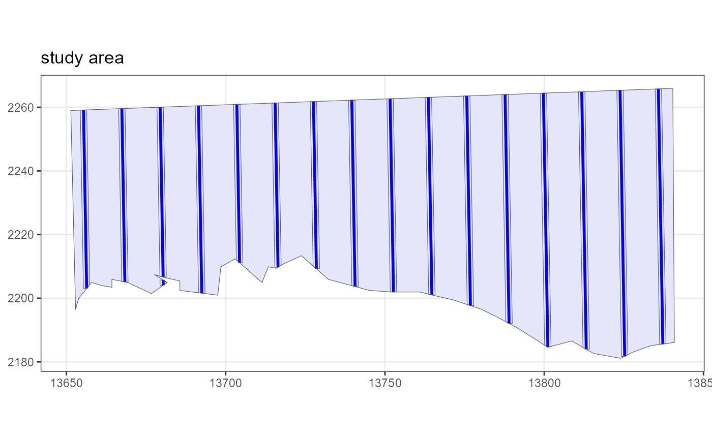

S4 generic method to generate an instance of a design
Source:R/generic.functions.R, R/Line.Transect.Design.R, R/Point.Transect.Design.R
generate.transects-methods.RdUses the survey design details in the design class to generate a set of transects, i.e. a single survey.
Usage
generate.transects(object, quiet = FALSE, ...)
# S4 method for class 'Line.Transect.Design'
generate.transects(object, quiet = FALSE, ...)
# S4 method for class 'Point.Transect.Design'
generate.transects(object, quiet = FALSE, ...)Details
The transects are returned within an object of class Transect which records some of the design options used to generate it along with the samplers as an sf object of class 'POINT' or 'LINESTRING'/'MULTILINESTRING'. The Transect object also contains the covered areas as a 'POLYGON' or 'MULTIPOLYGON' sf object.
Examples
#Point transect example
shapefile.name <- system.file("extdata", "TrackExample.shp", package = "dssd")
region <- make.region(region.name = "study area",
shape = shapefile.name)
design <- make.design(region = region,
transect.type = "point",
design = "random",
samplers = 25,
design.angle = 45,
edge.protocol = "minus",
truncation = 3)
# Generate a single survey instance
survey <- generate.transects(design)
plot(region, survey, covered.area = TRUE)
#Line transect example
# Define the design
design <- make.design(region = region,
transect.type = "line",
design = c("systematic"),
line.length = 1000,
design.angle = c(179),
edge.protocol = "minus",
truncation = 1)
# Create a single set of transects to check
survey <- generate.transects(design)
plot(region, survey, covered.area = TRUE)
